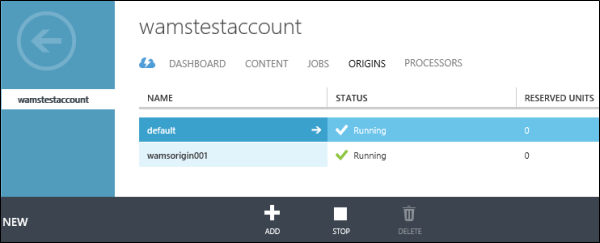
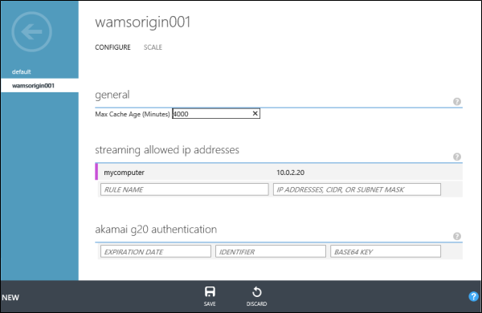

Media Services enables you to add multiple streaming origins to your account and to configure the origins. Each Media Services account has at least one streaming origin called default associated with it.
If you want to configure the origin, click the name of the origin.

The CONFIGURE tab enables you to do the following configurations:
Set the maximum caching period that will be specified in the cache control header of HTTP responses. This value will not override the maximum cache value that have been set explicitly on the blob content.
Specify IP addresses that would be allowed to connect to the published streaming endpoint. If no IP addresses specified, any IP address would be able to connect.
Specify configuration for G20 authentication requests from Akami servers.

The SCALE tab enables you to set the on-demand streaming reserved units.
For detailed information about reserved units, see Scaling Media Services.